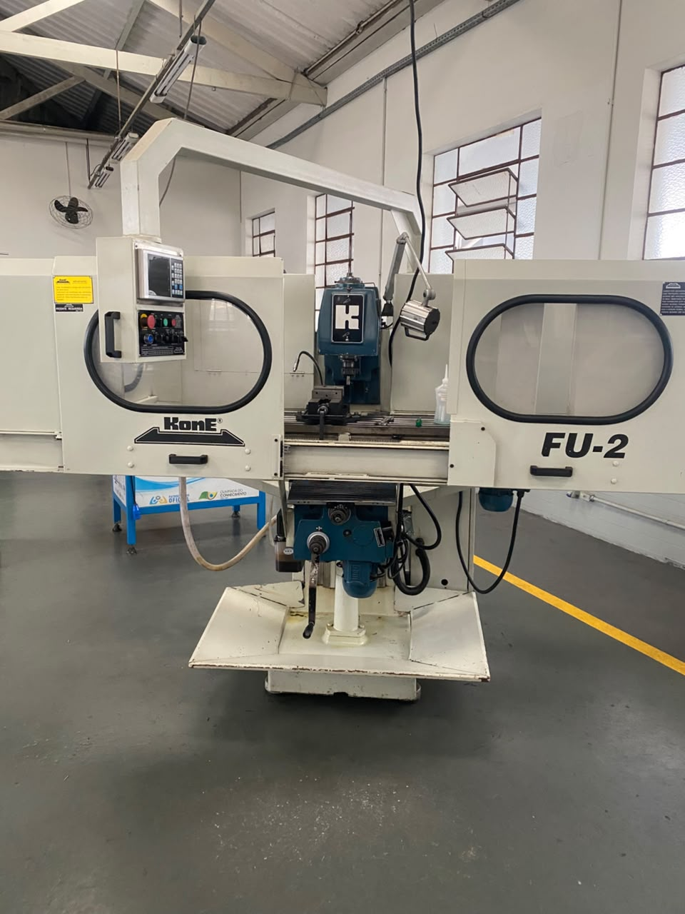
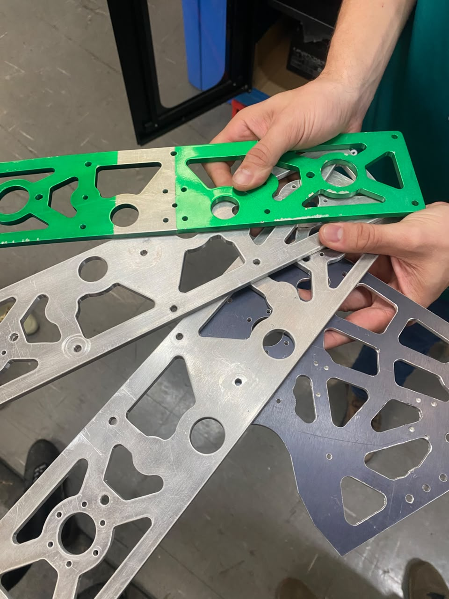
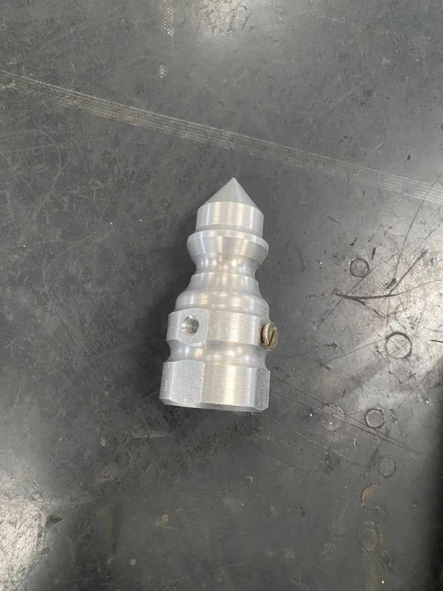

A oficina do senai e o local onde os alunos interagem diretamente com as maquinas presentes no senai. Diversas coisas do senai são produzidas na oficina, incluindo as peças utilizads pelos alunos de robotica.
Sobre
Maquinas
Essas são as maquinas utilizadas na Oficina Senai
- Torno Mecânico:Faz a usinagem das pessas e desbastagem.

- Furadeira de Bancada:E uma furadeira mais precisa.
-

- Fresadara:Faz a mesma coisa que o torno, mas de forma diferente.
-

- Retífica:Faz o polimento da peça.
-

- Torno CNC: E um torno "automatica" e so programar e ele faz a peça automaticamente.
-

- Centro Usinagem:E uma fresadora "automatica" as etapas são as mesmas do torno CNC.
-

- resutados da utilização das maquinas.
-

-
